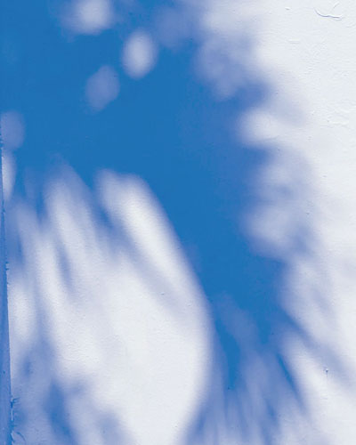

So many stairs. I count 57 steps.

I usually walk this route without paying much attention. Today, I decided to walk slowly and notice what I normally pass by.
The concrete looked gray at first. Looking closer, I noticed green, pink, and silver.
A bicycle passed just as I stepped off the curb. Look before crossing.
FRESH FLOWERS
OPEN LATE
PLEASE RING BELL
I covered very little distance, but found more to look at once I stopped trying to get somewhere.
Notes written from memory after returning home.